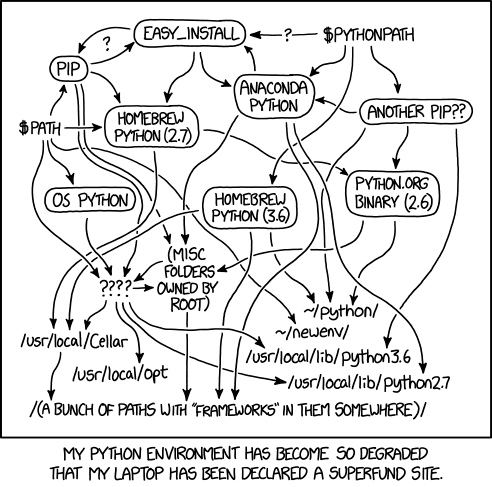

Created at: 2024-08-06
The ecosystem for managing Python environments is huge, and so is the number of tools that are used to manage these environments.
We have: pyenv, virtualenv, virtualenvwrapper, asdf, conda,
anaconda, uv, poetry, pipenv etc.
It is very easy to make a mess on your local environment and this cartoon from xkcd sums it up well:

The purpose of this post is to argue whether I need any of these tools when working on multiple Python projects with incompatible versions and dependencies.
Mind you that I program for a living. Some of the knowledge and intentions behind the way I do things have been learned through trial and error over time. What is written here assumes that you too have a similar background. Otherwise it would be too difficult to explain everything from scratch.
Also, I expect that you don't need convincing that using your global Python executable for everything is a bad idea, and that isolated virtual environments for each project is the best solution to avoid dependency headaches.
Every tool I cited above is a little bit different, but I will pick pyenv as
an example since it is one of the tools with the smallest footprint.
pyenv let's you:
pyenv install 3.10.4pyenv local <version>virtualenv among other tools.This is pretty neat, but is it worth to install this tool made of 101,263 lines of code and data files (as per v2.4.9) just so that you have these commands?
My answer is no. You are not going to need it and you are better off with the default tools (more on that later).
There is also undesired behaviour that comes from the magic added by pyenv:
pyenv
collection of shims at the beginning of your $PATH variable, as in:$(pyenv root)/shims:/usr/local/bin:/usr/bin:/bin`
pip) so
that they automatically pick whatever version of Python you need for that
directory.
I am not a fan of magical tools, and I think that the potential mistakes
that can be caused by this type of facility are not worth it.You might find that pyenv is actually useful for you after this short
description. If that is the case, go for it!
I personally am not a big fan of magical tools and I like to have control and understanding of how to fundamentally control my work environment as this is an important part of my job.
I have also been surprised in the past numerous times by how easy it is to learn and use the basic tools available by the OS or the programming language itself, which has only added to my scepticism of magical tools actually adding value in exchange for their added cognitive load.
I also mentioned at the top of this section that pyenv is one of the tools
with the smallest footprint. That is true, other tools such as conda, asdf
and, heck, nix are on a much higher level of abstraction, and to me are even
less desirable if my task is to manage Python environments.
There are also other caveats with such tools such as the fact that they change, grow bigger, and sometimes change their ways thus generating incompatibility with their earlier versions.
It is not hard to find issues on those repositories where some conflicting dependency has broken the dependency resolver tool itself 1. If you are in a situation where you need a version management tool to manage your version management tool, things get complicated. It is a fact that software breaks, and if your environment management that is build upon high levels of abstraction has failed you, how will you fix this issue without knowing enough about this 100,000 lines code repository?
I am writing this article in 2024. Building Python from source is incredibly easy and fast, yet surprisingly very few people actually do it. Yes... Building from source! What a crazy idea.
It is possible to download a specific Python version and set up a virtual environment using Python's own venv tool without any extra dependency whatsoever.
Here's a short list of bash commands that download Python 3.11.5 and set a virtual environment for it:
# You'll be installing your Python binaries at $HOME/python_bin.
mkdir -p $HOME/.python_bin/ && cd $HOME/.python_bin/
# Download the tar for the Python version you want.
curl -O https://www.python.org/ftp/python/3.11.5/Python-3.11.5.tgz
# Decompress and install it.
tar -xzf Python-3.11.5.tgz && cd Python-3.11.5
./configure --prefix=/tmp/localpython/3.11.5 && make && make install
# Create your environment anywhere you like.
./$HOME/python_bin/Python-3.11.5/python -m venv my_env
source my_env/bin/activate
That is it. Now you know how the whole process works (it is so easy) and you're
using venv which was introduced to core Python in 3.3+. You can also play
with compilation flags and build the binary with some extensions (but you don't
have to!).
You can run however many virtual environments you want from that binary, and put them anywhere you like. If you want extra convenience to activate that environment for a particular project, just create an alias:
alias myproj="/somewhere/my_env/bin/activate && cd /somewhere/myproj"
If you aren't using Python 3.3+, just swap venv for anything else that works
for your version or heck, just directly use that Python executable for your
project. Now that you know how it works, it is very easy to change it to
your taste, and that's exactly what I wanted to show in this post.
If you want some further ideas, this is the script I am using on my bashrc
file.
install_python_version() {
# call this function with a version of Python
# like `install_python_version 3.11.9`.
# Clean up first
rm -rf /tmp/python-install
# This is where the different Python executables will be installed.
DIR=$HOME/.python_bin/python-$1
mkdir -p $DIR
# This is where temporary installation files will be available.
mkdir -p /tmp/python-install && cd /tmp/python-install
# Download the python version
curl -O https://www.python.org/ftp/python/$1/Python-$1.tgz
tar -xzf Python-$1.tgz && cd /tmp/python-install/Python-$1
./configure --prefix=$DIR && make && make install
echo "Now you can install your virtualenv:"
echo "$HOME/.python_bin/python-$1/bin/python3 -m venv /tmp/my_env"
}
You can invoke it from the shell with install_python_version 3.11.5.
It is true that the script above might not work verbatim for a particular class
of hardware. But provided your hardware is supported by CPython itself, it
should all work smoothly. If not, send me an email
marceelofernandes@gmail.com and I can try to help you.
The main goal here is to seed an idea that compiling from source is a real option, and that there's nothing to be afraid of when doing so. You get the binary, and decide where to put it and how to handle it.